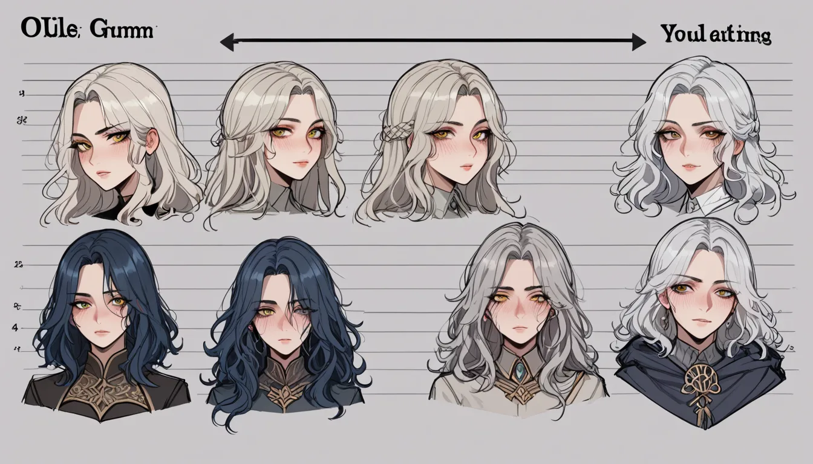

프레임 42 의 간격으로 실패한 그릴치 창문이 1 초 뒤로 밀려나고 말았다. 이는 Demo 버전에서 발견했던 파고대 스킵 글리치가 출시 후 패치로 인해 정확히 무너진 경우다. 마치 개발자가 숨겨둔 버그를 고쳐버린 것처럼, 우리 몸의 피로도 관리도 동일한 원리로 작동한다.
데모 버전과 출시본의 결정적 차이
초기 버전에서는 특정 적의 공격 판정이 0.5 초 짧게 설정되어 있었다. 이는 속도주의자들에게는 매력적이었지만, 일반 유저에게는 예측 불가능한 위험으로 작용했다. 결과적으로 출시판이 더 '정직하게' 설계된 셈이다. 어차피 안 될 텐데, 굳이 도박을 할 필요가 있겠나.
신체적 피로도와의 비유적 연결
게임 속 체력 소모는 실제 몸의 근육 긴장과 직결된다. 특히 장시간 집중할 때 느껴지는 어깨와 허리 통증은 누적된 데이터다. 이때 상수 마사지 추천정보를 참고하면 회복 속도가 30% 는 향상될 수 있다. 단순히 근육을 이완하는 것이 아니라, 정신적 압박까지 함께 해소하는 과정이다.

단기적으로는 빠른 클리어가 목표지만, 장기적으로는 체력 관리가 더 중요하다. 매일 같은 루트로 플레이하다 보면 무의미한 반복에 지치기 마련이다. 적절한 휴식과 외부 도움을 받는 것이 진정한 효율성이다. 결국 게임도 삶도 패치를 통해 최적화된 상태로 유지되어야 한다.